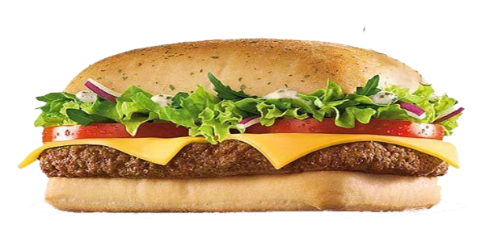
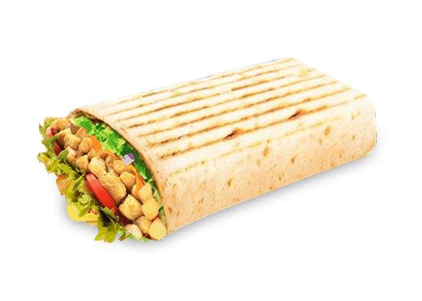
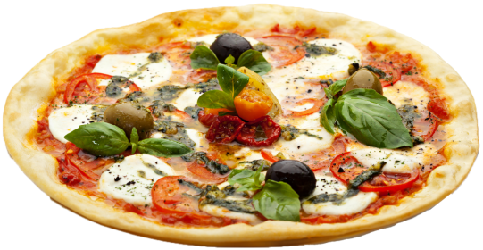

Le Camp Nou : Mythique et sensationnel ! 
Le Bernabeau : Classieux et classique !
La Calderon : Une gourmandise populaire !
Le San Mames : Une recette antique et secrète !
 Nos viandes sont fraiches et traçable
Vous pouvez également payer en Bitcoin ou par PayPal
Nos viandes sont fraiches et traçable
Vous pouvez également payer en Bitcoin ou par PayPal